이 문서는 원류지자 탱커 형태로 대항로에 설 때의 라인전과 합류 대응을 정리한다. 영웅명은 중국판 선택 화면 표기를 유지했다. 아래 목록은 Tencent 영웅 데이터의 대항로 추천·겸임 분류를 기준으로 하므로 주 포지션이 다른 영웅도 포함한다. 같은 영웅이 여러 파일에 반복되는 경우는 그 포지션에서도 공식 분로 후보로 표시되어 있기 때문이다.
원류지자 탱커 형태의 기본 계획
- 첫 웨이브부터 맞딜을 고집하지 말고, 상대의 진입·제어 기술을 빼고 짧게 되받는다. 체력 우위를 만든 뒤 강가와 정글 입구의 시야를 팀에 열어 준다.
- 상대가 체력 회복·보호막·궁극기 강화에 들어가면 기술을 연달아 쓰지 않는다. 강화가 끝나거나 핵심 기술이 빗나간 직후가 교환 창이다.
- 라인에서 이기기보다 죽지 않고 라인을 밀어 두고 먼저 합류하는 것이 팀에 더 큰 이득인 매치업이 많다. 적 정글 위치가 안 보이면 긴 추격을 금한다.
- 회복형 상대에게는 팀의 치유 감소 수단을 고려하고, 적 원딜·마법사가 잘 컸으면 방어 아이템을 그 피해 유형에 맞춘다. 아이템 수치와 효율은 패치마다 달라 게임 안의 최신 설명을 확인한다.
매치업
대항로 고정·주요 후보
33개廉颇연속 돌진과 띄우기에 한꺼번에 맞지 않도록 옆으로 피한다. 궁극기 연계가 끝나거나 진입기가 빠진 뒤 짧게 반격한다.
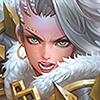
钟无艳석화 한 번으로 교환이 뒤집힐 수 있다. 스킬을 빼기 전에는 붙어서 평타를 주고받지 말고, 석화가 발동한 뒤 빠져나온다.
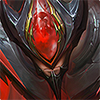
白起체력이 낮아질수록 강해지고 도발 궁극기로 역전한다. 킬각을 볼 때도 궁극기 사거리 밖에서 체력을 깎고, 도발을 쓴 뒤 마무리한다.

芈月연결 공격과 회복이 이어지는 동안 맞딜하지 않는다. 연결을 끊고 궁극기로 무적이 된 뒤 착지 지점을 보고 다시 압박한다.

吕布참격과 궁극기의 광역 진입이 강하다. 방어막만 믿고 정면 교환하지 말고, 궁극기 표시 범위를 벗어나 착지 후 공격한다.
夏侯惇기절·끌기와 보호막이 함께 돌아갈 때는 교환하지 않는다. 첫 진입을 옆으로 피하고 보호막이 사라진 구간에 짧게 압박한다.
曹操궁극기 회복이 켜진 긴 싸움은 불리하다. 궁극기를 먼저 쓰게 만들고 거리를 벌린 뒤, 지속 시간이 끝난 다음 다시 붙는다.

达摩벽 근처에서 밀려나면 연속 제어에 갇힌다. 벽을 등지지 말고, 궁극기 실패 또는 벽 연계가 끊긴 직후만 반격한다.
项羽밀어내기와 제어로 타워 쪽에 고립시킨다. 미니언과 타워 사이의 직선에 서지 말고, 돌진이 지나간 뒤 측면에서 교환한다.

老夫子궁극기 사슬 범위에 걸리면 긴 시간 맞딜해야 한다. 궁극기 전에는 거리를 유지하고, 사슬이 빗나가거나 끝난 뒤에만 전진한다.
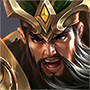
关羽이동을 막지 못하면 밀어내기 연계가 반복된다. 직선으로 달려오는 경로를 옆으로 비켜 서고, 돌진이 끊긴 동안만 맞붙는다.
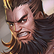
程咬金체력이 낮아져도 궁극기로 회복하며 버틴다. 회복 궁을 확인하면 추격을 끊고, 회복이 끝나기 전엔 포탑 아래 다이브를 하지 않는다.
刘邦라인에서 사라지면 궁극기로 다른 곳에 합류할 수 있다. 미니언을 빠르게 정리하고 핑으로 알리며, 아군이 교전할 때 혼자 맞딜을 이어가지 않는다.
花木兰침묵과 무거운 검의 제어가 이어지면 탈출이 어렵다. 가벼운 검의 접근기를 피하고, 무거운 검 자세가 끝나거나 주요 제어가 빗나갈 때 반격한다.
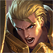
亚瑟침묵을 먼저 맞으면 원류지자의 대응 기술을 쓰기 어렵다. 접근 사거리 안에서 기술을 낭비하지 말고, 침묵을 빼고 나서 교환한다.
杨戬표식이 붙은 상태로 오래 싸우면 추격과 회복이 이어진다. 표식 또는 돌진을 피한 뒤 미니언을 사이에 두고, 체력이 낮을 때는 궁극기 처형 사거리를 주지 않는다.
哪吒궁극기로 멀리서 지정 진입해 후열을 압박한다. 궁극기 준비 중에는 아군 원거리 딜러와 떨어지지 말고, 진입한 목표를 함께 보호한다.

梦奇보호막을 두른 채 평타를 계속 쌓는 정면 교환이 강하다. 보호막을 먼저 벗기고 빠지며, 보호막이 비어 있을 때만 재진입한다.
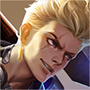
狂铁에너지가 찬 보호막·회복 구간에서 맞딜하면 손해다. 에너지가 낮을 때 교환하고, 강화 기술을 쓴 뒤에는 즉시 거리를 다시 벌린다.
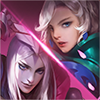
元歌본체와 인형의 위치를 동시에 봐야 한다. 인형이 접근하면 바로 끊거나 후퇴하고, 인형 제어기를 쓴 뒤 드러난 본체를 압박한다.
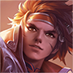
孙策배를 타고 먼 거리에서 급습할 수 있다. 강가와 시야 밖에서 직선으로 달려오는 경로를 경계하고, 충돌을 피한 뒤 배가 사라진 동안 라인을 민다.
李信원거리 형태의 정리와 근접 형태의 폭발 진입을 구분한다. 원거리 포킹을 억지로 맞교환하지 말고, 형태 전환 뒤의 기술이 빠질 때 짧게 붙는다.
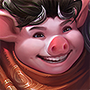
猪八戒전투 중 회복으로 체력을 되돌린다. 회복이 많은 교환을 길게 끌지 말고, 기술을 비운 구간에 집중 공격하거나 치유 감소를 준비한다.

马超창을 줍는 동선에서 빠르게 진입·이탈한다. 창이 놓인 방향과 이동 경로를 따라가지 말고, 창을 회수한 직후의 빈 시간을 노린다.

蒙恬방패 진형 정면에서는 피해를 줄이고 압박한다. 측면을 잡고 진형이 풀릴 때 공격하며, 궁극기 병력과 맞대고 오래 서 있지 않는다.
夏洛特연계가 완성되면 감속과 피해 감소가 겹친다. 연속 표식을 허용하지 말고 첫 연계가 끊긴 뒤에 교환하며, 긴 싸움보다 짧은 견제를 반복한다.
貂蝉표식 폭발과 궁극기 안의 연속 회피·회복으로 근접 맞딜을 길게 끈다. 궁극기 범위 밖으로 물러나고, 이동기가 빠진 뒤 제어를 연결한다.
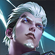
司空震원거리 견제와 근접 연속 공격, 궁극기 진입을 함께 경계한다. 사거리 안에서 기술을 다 맞지 말고, 궁극기 착지 뒤 강화 시간이 빠질 때 대응한다.
姬小满연속 기술 선택으로 당기기·차기·회복을 바꾼다. 첫 동작에 반응해 기술을 전부 쓰지 말고, 콤보가 끝나며 뒤로 빠지는 구간을 압박한다.
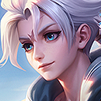
亚连표식이 쌓인 뒤의 연속 공격과 궁극기 진입을 허용하지 않는다. 표식이 적을 때 짧게 교환하고, 궁극기 대상이 되면 아군과 겹쳐 서지 않는다.

元流之子(坦克)같은 탱커 형태와 만나면 스킬을 먼저 소모한 쪽이 불리하다. 첫 기술을 서로 교환하고 보호막·회복 주기를 확인한 뒤, 아군 정글과 함께 진입한다.

影강한 연속 공격과 궁극기 진입이 예상되면 체력을 아껴 둔다. 돌진 직후 즉시 맞딜하지 말고, 강화·회피 동작이 끝난 뒤 제어를 연결한다.
蚩奼평타로 무기와 전투 형태를 바꾸며 회복·공속·제어가 달라진다. 형태가 강해지는 동안 뒤로 물러나고, 돌진·찌르기 또는 궁극기 강화가 빠진 다음 교환한다.
다른 주 포지션에서 넘어올 수 있는 후보
13개赵云낮은 체력에서 강해지는 진입을 경계한다. 체력 우위를 지키며 궁극기를 빼고 반격한다.

庄周궁극기 해제 효과가 켜진 동안 군중 제어를 아낀다. 해제가 끝난 뒤 아군의 제어와 함께 공격한다.
心魔六耳강화 평타와 공중 체공, 궁극기의 선택 불가를 순서대로 사용한다. 공중 동작 중 핵심 제어를 낭비하지 말고 궁극기 종료 후 공격한다.
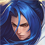
橘右京긴 사거리의 베기와 기절을 한 번에 맞지 않는다. 기절 기술이 빗나간 뒤 접근한다.
东皇太一궁극기 제압은 아군의 보호·집중 공격이 없으면 위험하다. 혼자 깊게 들어가지 말고, 제압 사거리 밖에서 아군과 함께 대응한다.

铠궁극기 동안 정면 맞딜을 피한다. 강화 지속 시간이 끝날 때까지 제어와 이탈을 아껴 둔다.
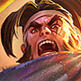
苏烈밀어내기와 궁극기 광역 띄우기, 부활로 교전을 뒤집는다. 좁은 벽 근처에 몰리지 말고, 부활을 소모시킨 뒤 다시 교전한다.
嫦娥마나를 보호막처럼 쓰며 버틴다. 마나가 남아 있을 때 긴 교환을 피하고, 보호막이 소진된 시점에 압박한다.
盘古무장 해제에 걸리면 평타 기반 대응이 끊긴다. 도끼 형태의 돌진·제어를 먼저 피하고, 무장 해제 지속이 끝난 뒤 반격한다.
曜표식과 궁극기 되돌아가기로 공격을 흘린다. 궁극기 위치를 기억하고, 되돌아간 뒤 추격한다.
赵怀真공격을 받아내거나 흡수한 뒤 되돌려 주는 기술을 주의한다. 강한 투사체·궁극기를 받아내는 동안 정면에서 전부 쓰지 않는다.
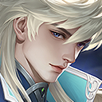
海诺원거리 포킹과 근접 교전, 되돌아가는 궁극기가 있어 추격이 어렵다. 궁극기 귀환 지점을 기억하고, 형태에 따라 거리 조절한다.
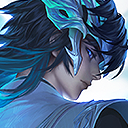
大司命표식과 긴 추격으로 체력이 빠진 뒤 마무리한다. 시야 없는 강가에 혼자 서지 말고, 궁극기 진입을 아군과 나눠 받아낸다.
참고 기준
- 매치업 초상화는 Tencent 공식 CDN의 영웅 아이콘을 문서 옆 `images/heroes/` 폴더에 저장해 사용한다.
- Tencent 공식 영웅 목록과 포지션 필드: herolist.json (2026-11-08 조회). `roles`와 `extra_cold_lane` 표기를 추천·겸임 분류에 사용했다.
- 원류지자 다섯 직업 및 전 라인 구성: 왕자영요 S43 시즌 안내.
- 매치업 문장은 기술의 핵심 위협을 기준으로 한 대응 요약이다. 수치·재사용 대기시간·아이템 효율은 패치에 따라 달라질 수 있으므로 게임 내 최신 설명을 우선한다.